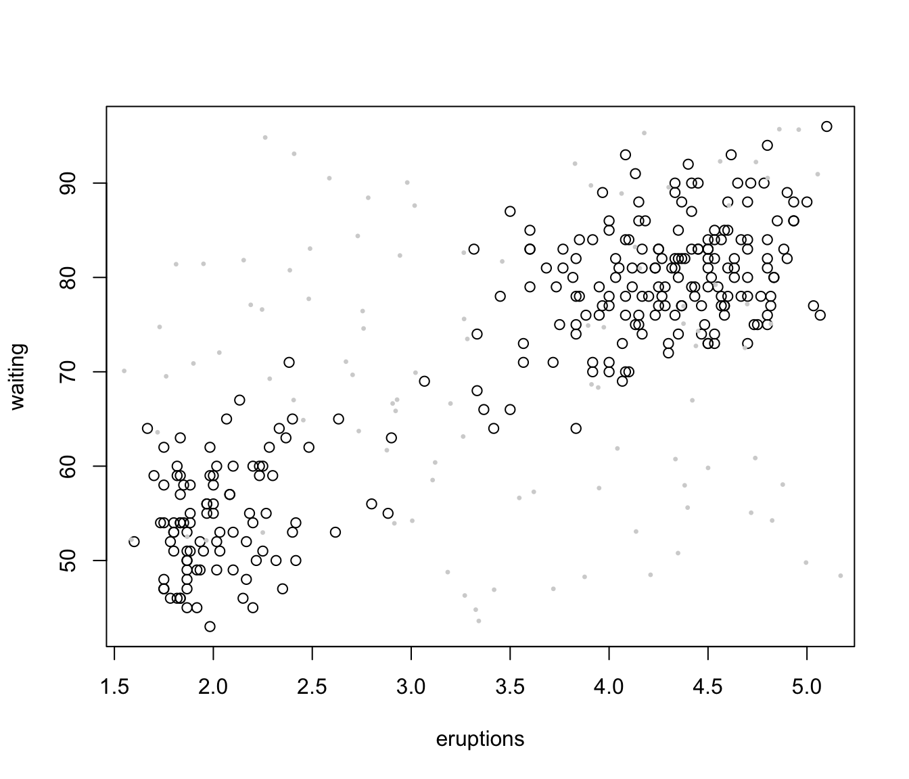

Model-Based Clustering
Mclust.RdModel-based clustering based on parameterized finite Gaussian mixture models. Models are estimated by EM algorithm initialized by hierarchical model-based agglomerative clustering. The optimal model is then selected according to BIC.
Mclust(data, G = NULL, modelNames = NULL, prior = NULL, control = emControl(), initialization = NULL, warn = mclust.options("warn"), x = NULL, verbose = interactive(), ...)
Arguments
| data | A numeric vector, matrix, or data frame of observations. Categorical variables are not allowed. If a matrix or data frame, rows correspond to observations (\(n\)) and columns correspond to variables (\(d\)). |
|---|---|
| G | An integer vector specifying the numbers of mixture components
(clusters) for which the BIC is to be calculated.
The default is |
| modelNames | A vector of character strings indicating the models to be fitted in the EM phase of clustering. The default is:
The help file for |
| prior | The default assumes no prior, but this argument allows specification of a
conjugate prior on the means and variances through the function
|
| control | A list of control parameters for EM. The defaults are set by the call
|
| initialization | A list containing zero or more of the following components:
|
| warn | A logical value indicating whether or not certain warnings
(usually related to singularity) should be issued.
The default is controlled by |
| x | An object of class |
| verbose | A logical controlling if a text progress bar is displayed during the
fitting procedure. By default is |
| ... | Catches unused arguments in indirect or list calls via |
Value
An object of class 'Mclust' providing the optimal (according to BIC)
mixture model estimation.
The details of the output components are as follows:
The matched call
The input data matrix.
A character string denoting the model at which the optimal BIC occurs.
The number of observations in the data.
The dimension of the data.
The optimal number of mixture components.
All BIC values.
The log-likelihood corresponding to the optimal BIC.
The number of estimated parameters.
BIC value of the selected model.
ICL value of the selected model.
The hypervolume parameter for the noise component if required, otherwise set to NULL (see hypvol).
A list with the following components:
proA vector whose kth component is the mixing proportion for the kth component of the mixture model. If missing, equal proportions are assumed.
meanThe mean for each component. If there is more than one component, this is a matrix whose kth column is the mean of the kth component of the mixture model.
varianceA list of variance parameters for the model. The components of this list depend on the model specification. See the help file for
mclustVariancefor details.
A matrix whose [i,k]th entry is the probability that observation i in the test data belongs to the kth class.
The classification corresponding to z, i.e. map(z).
The uncertainty associated with the classification.
References
Scrucca L., Fop M., Murphy T. B. and Raftery A. E. (2016) mclust 5: clustering, classification and density estimation using Gaussian finite mixture models, The R Journal, 8/1, pp. 289-317.
Fraley C. and Raftery A. E. (2002) Model-based clustering, discriminant analysis and density estimation, Journal of the American Statistical Association, 97/458, pp. 611-631.
Fraley C., Raftery A. E., Murphy T. B. and Scrucca L. (2012) mclust Version 4 for R: Normal Mixture Modeling for Model-Based Clustering, Classification, and Density Estimation. Technical Report No. 597, Department of Statistics, University of Washington.
C. Fraley and A. E. Raftery (2007) Bayesian regularization for normal mixture estimation and model-based clustering. Journal of Classification, 24, 155-181.
See also
summary.Mclust,
plot.Mclust,
priorControl,
emControl,
hc,
mclustBIC,
mclustModelNames,
mclust.options
Examples
#> ---------------------------------------------------- #> Gaussian finite mixture model fitted by EM algorithm #> ---------------------------------------------------- #> #> Mclust VEV (ellipsoidal, equal shape) model with 2 components: #> #> log-likelihood n df BIC ICL #> -215.726 150 26 -561.7285 -561.7289 #> #> Clustering table: #> 1 2 #> 50 100#> ---------------------------------------------------- #> Gaussian finite mixture model fitted by EM algorithm #> ---------------------------------------------------- #> #> Mclust VEV (ellipsoidal, equal shape) model with 3 components: #> #> log-likelihood n df BIC ICL #> -186.074 150 38 -562.5522 -566.4673 #> #> Clustering table: #> 1 2 3 #> 50 45 55 #> #> Mixing probabilities: #> 1 2 3 #> 0.3333333 0.3005423 0.3661243 #> #> Means: #> [,1] [,2] [,3] #> Sepal.Length 5.006 5.915044 6.546807 #> Sepal.Width 3.428 2.777451 2.949613 #> Petal.Length 1.462 4.204002 5.482252 #> Petal.Width 0.246 1.298935 1.985523 #> #> Variances: #> [,,1] #> Sepal.Length Sepal.Width Petal.Length Petal.Width #> Sepal.Length 0.13320850 0.10938369 0.019191764 0.011585649 #> Sepal.Width 0.10938369 0.15495369 0.012096999 0.010010130 #> Petal.Length 0.01919176 0.01209700 0.028275400 0.005818274 #> Petal.Width 0.01158565 0.01001013 0.005818274 0.010695632 #> [,,2] #> Sepal.Length Sepal.Width Petal.Length Petal.Width #> Sepal.Length 0.22572159 0.07613348 0.14689934 0.04335826 #> Sepal.Width 0.07613348 0.08024338 0.07372331 0.03435893 #> Petal.Length 0.14689934 0.07372331 0.16613979 0.04953078 #> Petal.Width 0.04335826 0.03435893 0.04953078 0.03338619 #> [,,3] #> Sepal.Length Sepal.Width Petal.Length Petal.Width #> Sepal.Length 0.42943106 0.10784274 0.33452389 0.06538369 #> Sepal.Width 0.10784274 0.11596343 0.08905176 0.06134034 #> Petal.Length 0.33452389 0.08905176 0.36422115 0.08706895 #> Petal.Width 0.06538369 0.06134034 0.08706895 0.08663823#> Warning: The presence of BIC values equal to NA is likely due to one or more of the mixture proportions being estimated as zero, so that the model estimated reduces to one with a smaller number of components.#> ---------------------------------------------------- #> Gaussian finite mixture model fitted by EM algorithm #> ---------------------------------------------------- #> #> Mclust VEV (ellipsoidal, equal shape) model with 2 components: #> #> Prior: defaultPrior() #> #> log-likelihood n df BIC ICL #> -225.2685 150 26 -580.8136 -580.814 #> #> Clustering table: #> 1 2 #> 50 100#> Warning: The presence of BIC values equal to NA is likely due to one or more of the mixture proportions being estimated as zero, so that the model estimated reduces to one with a smaller number of components.#> ---------------------------------------------------- #> Gaussian finite mixture model fitted by EM algorithm #> ---------------------------------------------------- #> #> Mclust VEV (ellipsoidal, equal shape) model with 2 components: #> #> Prior: defaultPrior(shrinkage = 0.1) #> #> log-likelihood n df BIC ICL #> -227.6729 150 26 -585.6223 -585.6227 #> #> Clustering table: #> 1 2 #> 50 100# Clustering of faithful data with some artificial noise added nNoise <- 100 set.seed(0) # to make it reproducible Noise <- apply(faithful, 2, function(x) runif(nNoise, min = min(x)-.1, max = max(x)+.1)) data <- rbind(faithful, Noise) plot(faithful)set.seed(0) NoiseInit <- sample(c(TRUE,FALSE), size = nrow(faithful)+nNoise, replace = TRUE, prob = c(3,1)/4) mod5 <- Mclust(data, initialization = list(noise = NoiseInit)) summary(mod5, parameter = TRUE)#> ---------------------------------------------------- #> Gaussian finite mixture model fitted by EM algorithm #> ---------------------------------------------------- #> #> Mclust VVE (ellipsoidal, equal orientation) model with 2 components and a noise #> term: #> #> log-likelihood n df BIC ICL #> -1746.033 372 12 -3563.093 -3674.077 #> #> Clustering table: #> 1 2 0 #> 180 88 104 #> #> Mixing probabilities: #> 1 2 0 #> 0.4301382 0.2112698 0.3585921 #> #> Means: #> [,1] [,2] #> eruptions 4.342387 1.978433 #> waiting 80.218154 54.005828 #> #> Variances: #> [,,1] #> eruptions waiting #> eruptions 0.1152778 0.4225761 #> waiting 0.4225761 30.6256680 #> [,,2] #> eruptions waiting #> eruptions 0.03873859 0.3776241 #> waiting 0.37762409 27.3035511 #> #> Hypervolume of noise component: #> 191.8869